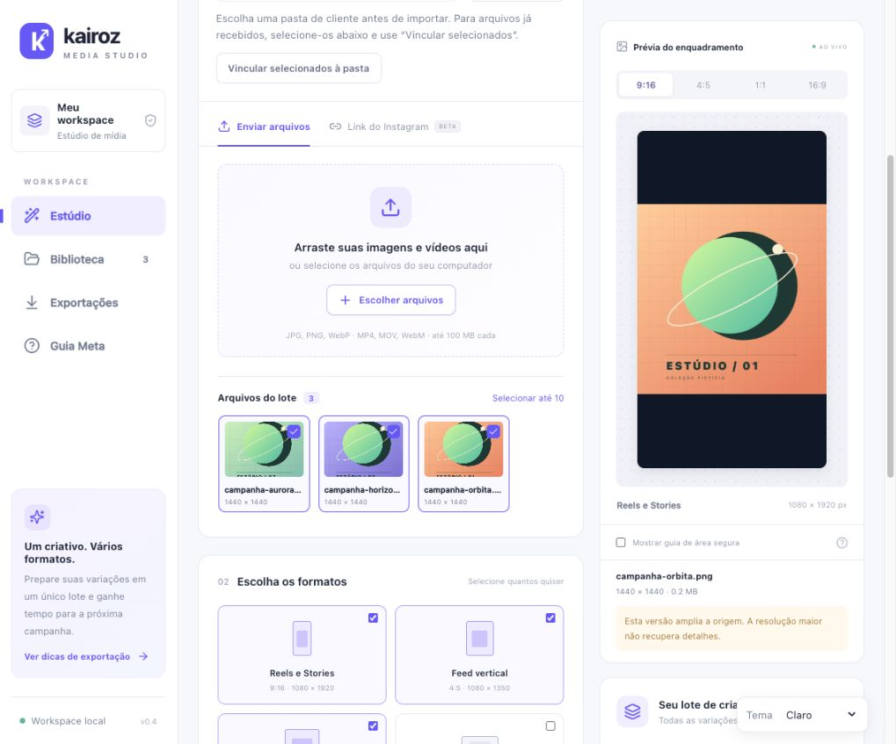
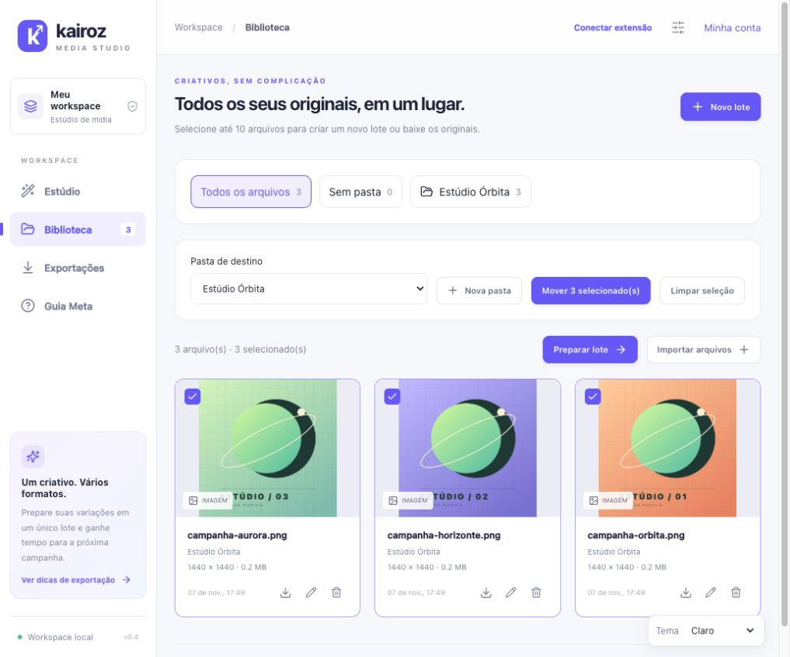
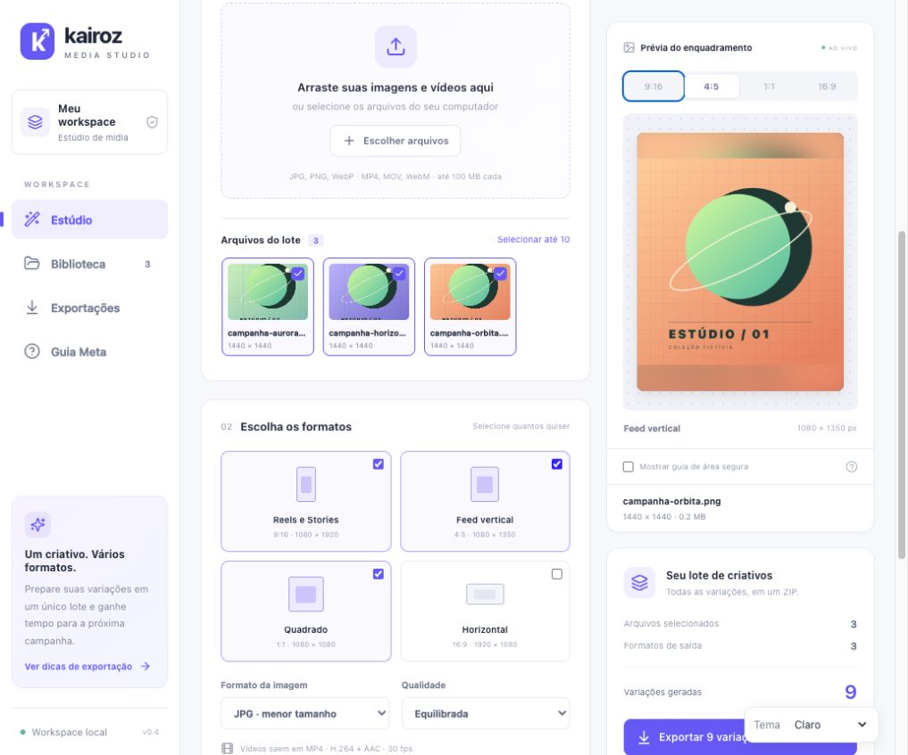
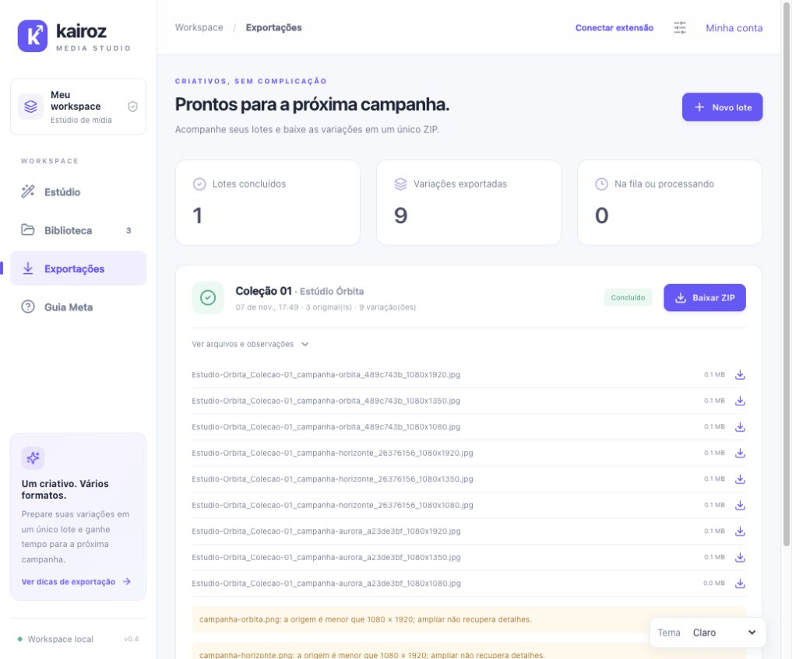

Reúna os arquivos.
Envie imagens e vídeos em lote e organize os originais em pastas por cliente. No Chrome, a extensão conectada pode enviar mídias compatíveis do Instagram para a biblioteca.
ESTÚDIO PARA CRIATIVOS DE CAMPANHA
Organize imagens e vídeos por cliente, ajuste o enquadramento e exporte versões prontas para revisar e usar nas suas campanhas.

01 / COMO FUNCIONA
Envie imagens e vídeos em lote e organize os originais em pastas por cliente. No Chrome, a extensão conectada pode enviar mídias compatíveis do Instagram para a biblioteca.
Escolha entre recortar, preservar com fundo sólido ou usar um fundo desfocado. A prévia ajuda a posicionar o conteúdo antes da exportação.
Defina os formatos do lote, identifique os arquivos por cliente ou campanha e baixe cada versão individualmente ou em um ZIP.
O ESTÚDIO EM USO
Veja uma campanha fictícia passar pela importação, pela biblioteca e pelo ajuste de enquadramento até o lote pronto para baixar.



EXTENSÃO DO CHROME
Com o estúdio conectado, abra um post no Instagram, escolha uma mídia compatível e selecione Enviar ao estúdio. A extensão acompanha a transferência e confirma quando o arquivo está disponível na biblioteca.
O teste abaixo enviou uma imagem de um carrossel ao estúdio local. A mídia original e os identificadores do post foram ocultados nas capturas.
02 / FORMATOS DE SAÍDA
Prepare versões verticais, quadradas e horizontais a partir da mesma mídia. Exporte imagens em JPG, PNG ou WebP e vídeos em MP4.
03 / PERGUNTAS
Para gestores de tráfego, criadores e estúdios que organizam mídias por cliente e precisam preparar várias versões de um mesmo criativo.
Você pode enviar os arquivos direto pelo estúdio. A extensão do Chrome é opcional e serve para trazer mídias compatíveis do Instagram. A disponibilidade varia conforme o post. Use arquivos que você tem autorização para reutilizar.
O acesso ao estúdio é por conta, com uma biblioteca privada. Se você quer conhecer a aplicação ou conversar sobre acesso, entre em contato por e-mail.
04 / CONTATO
Conte que tipo de campanha você produz e quais formatos usa. Podemos conversar sobre o seu fluxo e o acesso à aplicação.